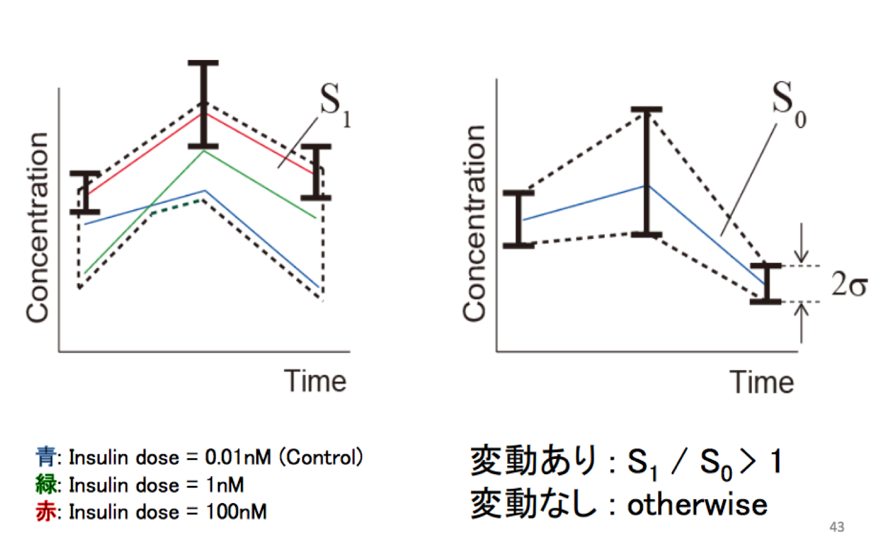

1. Intoroduction
- これまでの実習は「ネットワーク構造」→「応答パターンの生成」
- これからの実習は「現象（応答パターン）」→「モデル構築」
- インスリンによる代謝制御は従来考えられていたよりも広範囲のネットワークに作用する多階層現象だと、トランスオミクス解析によってわかってきた。（下図参照）

実習全体のテーマ
マルチオミクスデータとバイオインフォマティクスを用いて、多階層ネットワークを再構築する。
多階層ネットワークのアンバイアスな再構築法¶
論文：Reconstruction of Insulin Signal Flow from Phosphoproteome and Metabolome Data
- 変動した代謝物の同定
- 責任代謝酵素の同定
- リン酸化された責任代謝酵素の同定
- インスリンシグナル伝達と責任代謝酵素をつなぐ
- アロステリック調節（活性部位以外の別の場所に、特異的に物質を結合する機能を持ち、この部位に物質の結合が行われると構造変化が起こって機能が変化する現象）
 |
 |
ポイント
import pandas as pd
2. UNIXコマンドの使い方
- なぜMATLABではなくUNIXコマンドを使うのか？→「適材適所」
| 微分方程式 | テキスト初期 ファイル処理 |
ターンオーバー | |
|---|---|---|---|
| MATLAB | + | - | - |
| UNIXコマンド | - | + | + |
※ ターンオーバー：プログラムを最初に書いてから実行・修正を繰り返して完成させるまでの時間的手間
様々なコマンド¶
| 課題No. | コマンド | 内容 |
|---|---|---|
| 0 | pwd |
今いるフォルダを表示 |
| 0 | ls |
今いるフォルダ内のファイルを表示 |
| 0 | cd |
フォルダ間を移動 |
| 0 | more |
ファイルの中身を見る |
| 0 | wc |
ファイルの文字数を数える |
| 0 | expr |
四則演算を行う（※数値と演算記号の間にスペースが必要） |
| 0 | less |
ファイルの中身を一行ずつを読むfで進み、bで戻る。gでファイル先頭に進み、Gでファイル末尾に移動。qで終了。 |
| 0 | cat |
ファイルの中身を全部表示 |
| 0 | head(tail) |
ファイルの先頭（末尾）を表示 |
| 0 | man |
各コマンドのマニュアルを表示 |
| 1 | grep |
パターンマッチ |
| 2 | pipe |
左のコマンドの実行結果を右のコマンドの入力データにする |
| 3 | diff |
2つのファイルの差分を表示 |
| 4 | awk |
表形式データを処理 |
| 5 | sort |
辞書順に並べる |
| 5 | uniq |
重複を管理 |
| 6 | 変数 | データを一時格納する |
| 7 | for |
ループ処理 |
UNIX 課題1：UNIXコマンドの初歩を体験する¶
省略します。[ggks](https://www.google.com)（もしくは man hoge ）
# この後使うデータの準備（Webサイトのある階層を一括取得し、展開する。）
$ wget http://kurodalab.bs.s.u-tokyo.ac.jp/class/Summer/2019/Day6/transomics_data.zip
$ unzip transomics_data.zip
$ mv transomics_data
! tree | grep -v *.ipynb
UNIX 課題2：パターンマッチ入門¶
| コマンド | 内容 |
|---|---|
-i |
大文字と小文字を区別せず検索する |
-E |
拡張正規表現で検索を行う |
-e |
一致処理に指定した正規表現を使う |
-v |
一致しないものを検索する |
-n |
検索結果に行番号を表示する |
-l |
検索結果にファイル名のみ表示する |
-h |
検索結果にファイル名を表示しない |
-o |
検索結果に一致した文字を表示する |
-C |
検索結果に一致した箇所から前後に指定した行数表示する |
-r |
ディレクトリ内も検索対象とする |
-L |
検索した結果、該当しなったファイルを表示する |
df_metabolome = pd.read_csv("metabolome.txt", sep="\t")
# 1. データをExcelで開き、データの特徴を捉える。
df_metabolome.head(3)
# 2. "glucose" を含む行を表示する
$ grep glucose metabolome.txt
# 3. "Glucose" を含む行を表示する
$ grep Glucose metabolome.txt
# 4. "glucose" を「含まない」行を表示する
$ grep -v glucose metabolome.txt
# 5. "glucose" または "Glucose" を含む行を表示する
$ grep -i glucose metabolome.txt
# 6. "glucose" および "Glucose" を「共に含まない」行を表示する
$ grep -i -v glucose metabolome.txt
# 7. インデックス113の代謝物を表示する。
$ grep ^113 metabolome.txt
UNIX 課題3：パイプとリダイレクション、ファイル取り扱いの基本¶
# 1. grepの結果をテキストファイルに出力
$ grep CoA metabolome.txt > metabolome_CoA.txt
# 2. 行数をカウント
$ wc metabolome_CoA.txt
# 3. diffで模範解答との違いを出力（出力がなければ正解）
$ diff metabolome_CoA.txt Day6_AnswerFiles/metabolome_CoA.txt
# 4. 一度にgrep結果の行数をカウント
$ grep CoA metabolome.txt | wc
# 5. ファイルコピー
$ cp metabolome_CoA.txt metabolome_CoA_copy.txt
# 6. ファイル名の変更
$ mv metabolome_CoA_copy.txt metabolome_CoA_cp.txt
# 7. ファイル削除
$ rm metabolome_CoA_cp.txt
UNIX 課題4：awk¶
| # | コマンド | 説明 |
|---|---|---|
| i | $ awk '{ print }' metabolome.txt |
全ての行を表示する。 |
| ⅱ | $ awk '{ print $1 }' metabolome.txt$ cut –f1 metabolome.txt |
1列目を表示する。変数 $1 は1列目を指す。cut コマンドの -f オプションを用いても同じことができる。 |
| ⅲ | $ awk '{ print $2 }' metabolome.txt$ awk -F"\t" '{ print $2 }' metabolome.txt |
2列目を表示する。-F"\t" オプションを指定すると、タブ文字を列の区切りとして認識する。指定しないと区切り文字はタブ文字とスペース文字どちらも。 |
| ⅳ | $ awk -F"\t" '{ print $4"\t"$2 }' metabolome.txt$ cut –f4,2 metabolome.txt |
1. 4列目、2列目の順に表示する。出力形式は [4列目][タブ文字][2列目]。cut コマンドで同じことをしようとすると、出力が[2列目][タブ文字][4列目]になってしまう。 |
| ⅴ | $ awk -F"\t" '$2 ~ /CoA/{ print }' metabolome.txt |
2列目に文字列 "CoA" を含む行のみ表示する |
| ⅵ | $ awk '$1 == “16”, $1 == “24” { print }' metabolome.txt! |
1列目が ”16” の行から、1列目が ”24” の行までの範囲を表示する。“”で囲まれていると文字列として認識される。 |
| ⅶ | $ awk -F"\t" '($80 > 1){ print }' metabolome.txt |
80列目の値が 1 より大きい行のみ表示する |
| ⅷ | $ awk '$2 == “ATP” { print }' metabolome.txt |
2列目が文字列 "ATP" である行のみ表示する |
UNIX 課題5：sort と uniq¶
リン酸化タンパク質データ phosphoproteome.txt の各行は、リン酸化残基を持つペプチド（Not タンパク質）を表す。これについて、以下の演習問題に答えなさい。1, 2行目が見出し行であることに注意すること。
sort¶
| 略 | オプション | 内容 |
|---|---|---|
-n |
--numeric-sort |
数値として並べ替える |
-r |
--reverse |
降順で並べ替える |
-t |
--field-separator |
項目の区切りを指定する |
-k |
--key |
キーを指定して並べ替える |
-u |
--unique-r |
重複行を省いて並べ替える |
-f |
--ignore-case-u |
大文字小文字を関係なく並べ替える |
uniq¶
| 略 | オプション | 内容 |
|---|---|---|
-c |
--count |
重複した行数も表示する |
-d |
--repeated |
重複した行を表示する |
-D |
--all-repeated |
重複した行をすべて表示する |
-u |
--unique |
重複した行は一切表示しない |
-f |
--skip-fields=N |
指定した項目以降で重複を判断する |
-w |
--check-chars=N |
指定した文字数までで重複を判断する |
df_phosphoproteome = pd.read_csv("phosphoproteome.txt", sep="\t")
# 1. データをExcelで開き、データの特徴を捉える。
df_phosphoproteome.head(3)
# 2. 1-2行目の見出し行を表示せず、3行目以降を表示する。
$ tail -n +3 hoge.txt
# 3. phosphoproteome.txt の3行目以降の各行には、リン酸化ペプチドのIDと各時刻のリン酸化強度値が含まれている。これらにリン酸化された酵素は全部でいくつあるか数えなさい。
$ tail -n +3 phosphoproteome.txt | cut -f 1 | sort | uniq | wc
# 4. それぞれの酵素について何個のリン酸化ペプチドが得られたか数えなさい。
$ tail -n +3 phosphoproteome.txt | cut -f 1 | sort | uniq -c
余談：メタボロームとは？
細胞や臓器、血液など生体試料中に含まれる代謝物質（糖やアミノ酸、脂質など）の総体、もしくはその網羅的計測データを指す。異なる条件下に置いた細胞から得たメタボロームデータを比較することにより、当該細胞の代謝調節メカニズムの解明が可能であるほか、薬効バイオマーカー探索などにも用いられている。有名なデータベースとしては、[HMDB (Human Metabolome DataBase)](http://www.hmdb.ca/)や、本実習で用いる[KEGG (Kyoto Encyclopedia of Genes and Genomes)](https://www.genome.jp/kegg/)がある。
3. トランスオミクスStep1：変動した代謝物の同定
代謝物データ metabolome.txt から変動代謝物を抜き出し、 KEGG Mapper で利用可能な形式に変換する。
変動代謝物の判定基準¶
今回の目的は、インスリン依存の代謝物濃度変動を捉え、インスリンシグナルがどのように伝達しているかを調べることです。つまり、「インスリン濃度が上昇した時に各代謝物の濃度が変化したか？」を定量的にはかる指標が必要になります。
今回の実験では、これに、以下の画像で示される $S_0,S_1$ という値を用いています。$S_0,S_1$ はそれぞれ符号付の面積（$S_0$ は常に正だが）であり、インスリン濃度が高い時の濃度がコントロールに比べて高ければ正、低ければ負の値となります。
- $S_0$ は、コントロールの値を平均とした $1\sigma$ 区間の面積です
- $S_1$ は、最も外側の枠で囲まれた面積に符号をつけたものです。
この定量評価は少し雑（例えば、中濃度のインスリンではそこまで変動しないが、高濃度のインスリンには大きく反応する場合に、高濃度のインスリンに対する応答が同じ程度であれば、中濃度でもある程度反応するものに比べて $S_1/S_0$ の値が大きくなるが、それは正しく現象を捉えているのか…？）な気もしますが、今回は「正/負に反応したかどうか？」のみを考えているので、そこまで気にしないことにします。

# 1. 代謝物の変動を表す指標 S1/S0 はmetabolome.txt の 80 列目に記載されている。80列目だけ表示しなさい。
$ cut -f80 metabolome.txt
# 2. metabolome.txtの1-2行目は、各列の内容を説明する「見出し行」であってデータそのものではない。3行目以降表示したいときはどうすれば良いか答えなさい。
$ tail -n +3 metabolome.txt
#=== データの前処理 ===
# 3. 欠損点などの理由によりS1 / S0を計算できなかった代謝物については、当該箇所(80列目)に ”N.D.”と記載されている。“N.D." の代謝物の行を除いたデータを measured_metabolite.txt に出力しなさい。
$ tail -n +3 metabolome.txt | awk -F"\t" '($80 != "N.D."){ print }' > measured_metabolite.txt
# 4. 3の結果が模範解答ファイルと一致しているか確かめなさい。
$ diff measured_metabolite.txt Day6_AnswerFiles/Step_i/measured_metabolite.txt
# 5. KEGGデータベース内にIDが存在しない代謝物については、KEGGのIDを記載する箇所(4列目)に "-" と記載されている。4列目が "-" となっている代謝物をmeasured_metabolite.txt から取り除いた結果残るデータを mappable_metabolite.txt に出力しなさい。
$ awk -F"\t" '($4 != "-"){ print }' measured_metabolite.txt > mappable_metabolite.txt
# 6. 5の結果が模範解答ファイルと一致しているか確かめなさい。
$ diff mappable_metabolite.txt Day6_AnswerFiles/Step_i/mappable_metabolite.txt
#=== カラーマッピングの作成 ===
# 7. S1 / S0 > 1の代謝物は「増加」である。mappable_metabolite.txtを元にして、[増加した代謝物 ID][タブ文字]["red"] という形式のファイル metabolite_mapping.txt をつくりなさい。代謝物のIDは4列目に格納されている。また、"red" は綴りそのままの文字列である。
$ awk -F"\t" '($80 > 1){ print }' mappable_metabolite.txt | awk -F"\t" '{ print $4"\t""red" }' > metabolite_mapping.txt
# 8. 7の結果が模範解答ファイルと一致しているか確かめなさい。
$ diff metabolite_mapping.txt Day6_AnswerFiles/Step_i/metabolite_mapping_first.txt
# 9. S1 / S0 < -1の代謝物は「減少」である。[減少した代謝物 ID][タブ文字]["blue"] という形式で、metabolite_mapping.txtに「追加書き込み」しなさい。
$ awk -F"\t" '($80 < -1){ print }' mappable_metabolite.txt | awk -F"\t" '{ print $4"\t""blue" }' >> metabolite_mapping.txt
# 10. -1 < S1/S0 < 1の代謝物は「変動なし」である。[変動なしの代謝物 ID][tab]["green"] という形式で、metabolite_mapping.txtに追加書き込みしなさい。
$ awk -F"\t" '(-1 < $80 && $80 < 1){ print }' mappable_metabolite.txt | awk -F"\t" '{ print $4"\t""green" }' >> metabolite_mapping.txt
# 11. 7-10 で作成したファイルが模範解答ファイルと一致しているか確かめなさい。
$ diff metabolite_mapping.txt Day6_AnswerFiles/Step_i/metabolite_mapping_final.txt
# 12. KEGG Mapper を開き、以下の手順で代謝経路図を表示しなさい。
metabolite_mapping.txtの内容を KEGG Mapper の入力フォームにコピー＆ペーストする- KEGG Mapper にて、Search against 欄に Rattus novegicus を意味する 'rno' を入力（∵Fao細胞はラット肝がん由来）。
- Use uncolored diagram をチェックして Exec ボタンを押す。
- 'rno01100 Metabolic pathways - Rattus norvegicus (rat)' をクリックする。
UNIX 課題6：変数¶
| # | コマンド | 説明 |
|---|---|---|
| i | $ i=1 |
変数に値を代入するコマンドは [変数名]=[値] と書く |
| ⅱ | $ i = 1>>> -bash: i: コマンドが見つかりません |
変数名、代入記号、値の間にスペースを挟むとエラーになる |
| ⅲ | $ echo $i>>> 1 |
変数に格納されている値を呼び出す際には、\$[変数名] と書く。echoは引数を表示するだけの関数、意外とよく使う。 |
| ⅳ | $ echo $ij>>> （何も出力されない） $ echo ${i}j>>> 1j |
変数名の直後に文字列を書く場合、変数名と当該文字列の区切りを明確にするため、変数名は { } で囲まなければならない。 |
| ⅴ | $ echo '${i}j'>>> \${i}j |
シングルクオートで囲まれた文字列中に含まれる変数名は、文字列としてそのまま出力される |
| ⅵ | $ i=$(ls)$ echo $i>>> Day6_AnswerFiles metabolite_mapping.txt ... |
コマンドの実行結果そのものを変数として扱いたいときは、$( command ) のように書く |
UNIX 課題7：for¶
# 1. 整数を1から10まで順に表示する。
$ seq 10
# 2. 1から10までの整数をforループごとにiに代入し、出力する。
$ for i in $(seq 10) ; do echo $i ; done
# 3. 1から10までの整数を順に足し合わせる。
$ sum=0
$ for i in $(seq 10) ; do sum=$(expr $sum + $i) ; echo $sum ; done
# 4. metabolite_mapping.txtとfor文を用いて、増加した代謝物IDのみを黒色で表示するKEGG Mapper用テキストを表示せよ。
$ for aCPD in $(awk -F"\t" '($2 == "red"){ print }' metabolite_mapping.txt | cut -f1) ; do echo -e "$aCPD\tblack"; done
4. トランスオミクスStep2：責任代謝酵素の同定
「ある代謝物質を基質または産物とする酵素」のことをReconstruction of Insulin Signal Flow from Phosphoproteome and Metabolome Dataでは「責任代謝酵素 (RME: Responsible Metabolic Enzyme)」と定義した。責任代謝酵素について以下の問いに答えなさい。
# 1. 多くのデータベースには、APIといわれるインターフェイスが存在する。以下のURLをブラウザ等に打ち込み、KEGGデータベースの「クエン酸 (KEGG COMPOUND ID: C00158) 」の項を閲覧せよ。代謝物データには名前・分子式・分子量・代謝経路、代謝酵素などの情報が含まれていることが確認できる。 URL: http://rest.kegg.jp/get/cpd:C00158
# 2. curl [URL] は、 URL にあるウェブページの内容を標準出力に書き出すコマンドである。以下のコマンドにより、KEGGデータベースにアクセスし、「クエン酸 (KEGG COMPOUND ID: C00158) 」のデータを取得し、データの内容を確認せよ。
$ curl http://rest.kegg.jp/get/cpd:C00158 > C00158.txt
$ less C00158.txt
# 3. KEGGデータベースは、上記のAPI（get）以外にも様々なAPIを提供している。API "link" はある項目に対して関連のある項目を網羅的に出力する。以下のコマンドにより、KEGGデータベースにアクセスし、「クエン酸 (KEGG COMPOUND ID: C00158) 」に関わる全代謝酵素（ec.X.X.X.X）のデータを出力せよ。C00158.txtと比較すると、ENZYMEの項と同じことがわかる。
$ curl http://rest.kegg.jp/link/ec/cpd:C00158
#=== 変動代謝物に関わる代謝酵素の抜き出し ===
# 4. では、変動代謝物に関わる代謝酵素の抜き出しを行う。まず、変動代謝物のデータをまとめたファイル metab_rme.txt を作成し、lessで確認せよ。なお、このファイルは metabolite_mapping.txt から変動代謝物を抜き出し、それらをcurlを含むfor文にわたすことで作成可能である。最後にソートすること
$ for aCPD in $(awk -F"\t" '($2 != "green"){ print }' metabolite_mapping.txt | cut -f1) ; do curl http://rest.kegg.jp/link/ec/cpd:$aCPD; done | sort> metab_rme.txt
# 5. 結果が模範解答と一致しているかを確認する。
$ diff metab_rme.txt Day6_AnswerFiles/Step_ii/metab_rme.txt
# 6. metabolite_rme.txtから代謝酵素のみを取り出し、重複をなくし、空白行を削除したファイルrme.txtを作成せよ。（ヒント：空白行の削除にはgrep –vを用いる。空白行は"^$"、つまり「行先頭^の次の文字が行末尾$」で表現）
$ cut -f2 metab_rme.txt | sort | uniq | grep -v "^$" > rme.txt
# 7. 結果が模範解答と一致しているかを確認する。（注：KEGGの更新により、ここからは微妙に一致しないこともある）
$ diff rme.txt Day6_AnswerFiles/Step_ii/rme.txt
# 8. 黒色の責任代謝酵素を KEGG Mapper で視覚化するための元ファイル、rme_mapping.txtを作成する。
$ for aEC in $(cat rme.txt) ; do echo -e "$aEC\tblack"; done > rme_mapping.txt
# 9. 結果が模範解答と一致しているかを確認する。
$ diff rme_mapping.txt Day6_AnswerFiles/Step_ii/rme_mapping.txt
# 10. metabolite_mapping.txt と rme_mapping.txt を一つのファイルにまとめる。（fig2_mapping.txt）
$ cat metabolite_mapping.txt rme_mapping.txt > fig2_mapping.txt
# 11. 結果が模範解答と一致しているかを確認する。
$ diff fig2_mapping.txt Day6_AnswerFiles/Step_ii/fig2_mapping.txt
# 12. KEGG Mapper を開き、先ほどと同様の手順で変動代謝物と責任代謝酵素を同時に視覚化しなさい。